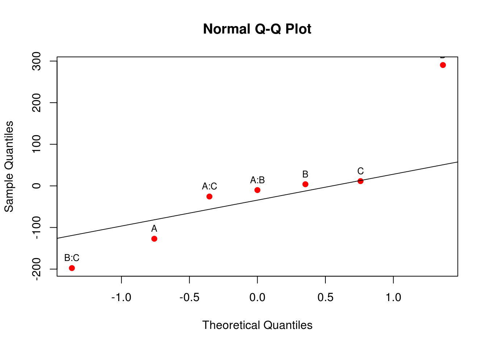
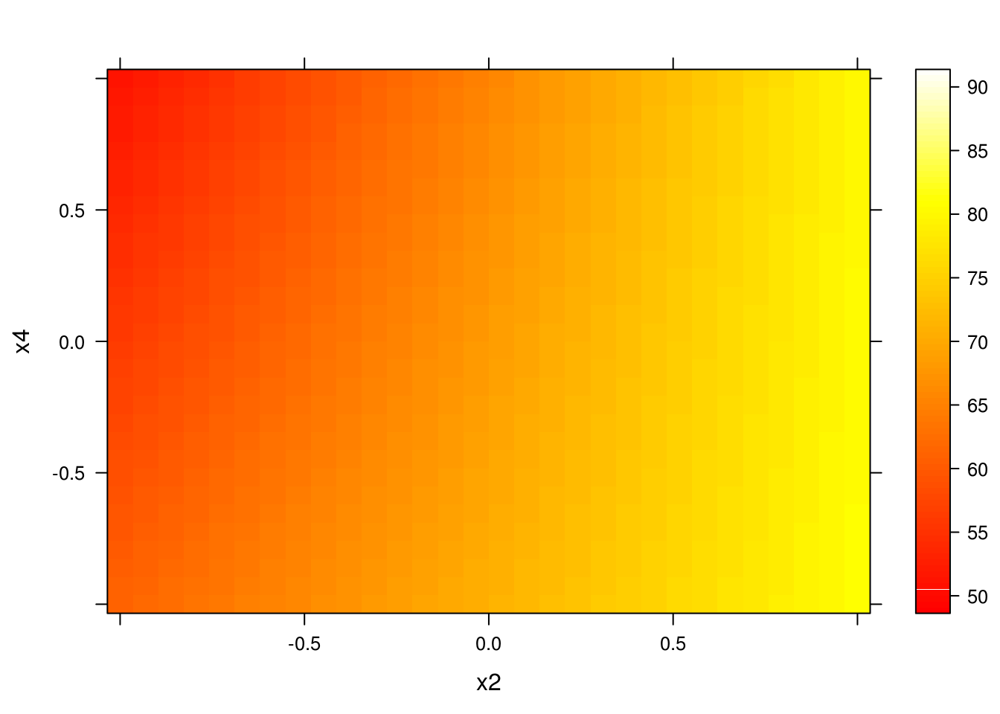
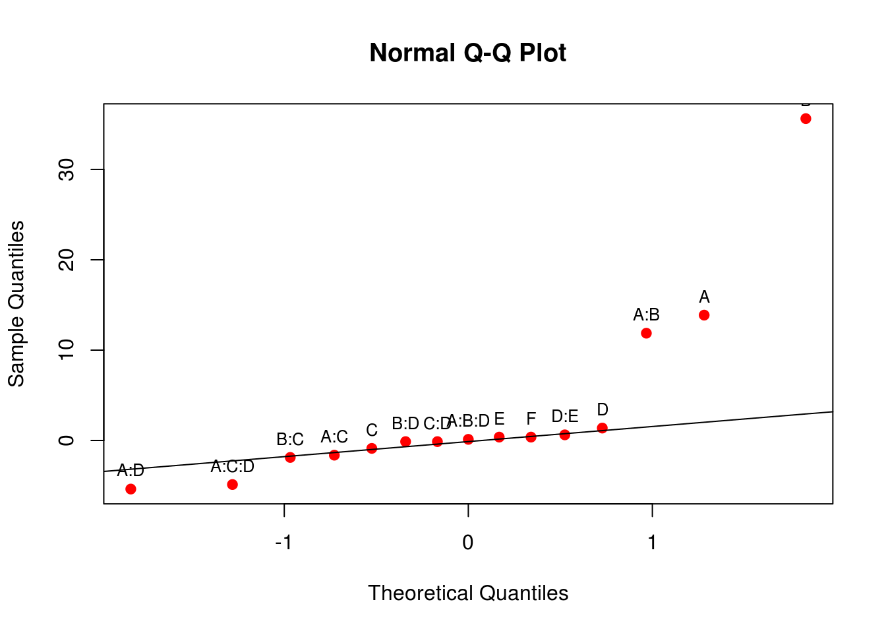

Experimentos fatoriais \(2^3\)
Introdução
Já vimos que em geral, os experimentos fatoriais \(2^k\) são compostos por \(k\) tratamentos, cada um com apenas dois níveis (que chamamos de alto e baixo). A representação geométrica e as formas de estimação para todos os componentes de um experimento fatorial \(2^2\) já foram vistas aqui.
Nesta seção veremos as adatações necessárias para se obter todos os componentes de um experimento fatorial com 3 fatores, cada um com dois níveis. O modelo estatístico geral para um experimento fatorial \(2^3\) pode ser escrito como
\[ y_{ijkl} = \mu + \alpha_i + \beta_j + \gamma_k + (\alpha\beta)_{ij} + (\alpha\gamma)_{ik} + (\beta\gamma)_{jk} + (\alpha\beta\gamma)_{ijk} + \epsilon_{ijkl} \]
Com \(i = 1, \ldots, a\) niveis do fator A \(j = 1, \ldots, b\) niveis do fator B, \(k = 1, \ldots, c\) niveis do fator C, e \(l = 1, \ldots, r\) repetições. De maneira simpllificada podemos também escrever esse modelo como
\[ y = A + B + C + AB + AC + BC + ABC + \epsilon \]
Portanto, esse planejamento permite estimar 3 efeitos principais, 3 efeitos de interações de segunda ordem, e 1 interação de terceira ordem.
Usando a representação geométrica (que já vimos ser equivalente à restrição do tipo soma zero em modelos lineares gerais), temos agora um cubo, onde cada dimensão representa um fator:
bc ------- abc
.| .|
[+] c__|______ac |
| | | |
C | b -----|- ab [+]
| . | . B
[-] (1)________a [-]
[-] A [+]Dessa forma, obtemos também a seguinte tabela de sinais para os afeitos principais, seguindo a ordem de Yates:
nom A B C
1 1 - - -
2 a + - -
3 b - + -
4 ab + + -
5 c - - +
6 ac + - +
7 bc - + +
8 abc + + +As colunas das interações são obtidas multiplicando-se as colunas dos respectivos fatores. Nota-se que em um experimento fatorial \(2^3\) temos então 8 combinações possíveis para os 3 tratamentos.
Análise através de um exemplo
No capítulo 5 de Box, Hunter e Hunter (2005) é apresentado um experimento que avalia o rendimento de um processo na presença de 3 fatores: temperatura (T) e concentração (C), ambos quantitativos, e tipo de catalisador (K), qualitativo. O experimento foi executado com 2 repetições, e pode ser visto abaixo (disponível aqui):
url <- "http://leg.ufpr.br/~fernandomayer/data/BHH2/tab0503.dat"
dados <- read.table(url, header = TRUE)
str(dados)
# 'data.frame': 16 obs. of 5 variables:
# $ run: int 6 2 1 5 8 9 3 7 13 4 ...
# $ T : int -1 1 -1 1 -1 1 -1 1 -1 1 ...
# $ C : int -1 -1 1 1 -1 -1 1 1 -1 -1 ...
# $ K : int -1 -1 -1 -1 1 1 1 1 -1 -1 ...
# $ y : int 59 74 50 69 50 81 46 81 61 70 ...Em um primeiro momento, para simplificação da explicação abaixo, foi considerado como resposta a média de rendimento das duas repetições do experimento, ficando apenas com 8 observações. Estes dados podem ser visualizados abaixo:
da <- aggregate(y ~ T + C + K, data = dados, FUN = mean)
str(da)
# 'data.frame': 8 obs. of 4 variables:
# $ T: int -1 1 -1 1 -1 1 -1 1
# $ C: int -1 -1 1 1 -1 -1 1 1
# $ K: int -1 -1 -1 -1 1 1 1 1
# $ y: num 60 72 54 68 52 83 45 81
kable(da)| T | C | K | y |
|---|---|---|---|
| -1 | -1 | -1 | 60 |
| 1 | -1 | -1 | 72 |
| -1 | 1 | -1 | 54 |
| 1 | 1 | -1 | 68 |
| -1 | -1 | 1 | 52 |
| 1 | -1 | 1 | 83 |
| -1 | 1 | 1 | 45 |
| 1 | 1 | 1 | 81 |
Os níveis -1 (baixo) e 1 (alto) de cada fator são os seguintes:
| (-) | (+) | |
|---|---|---|
| T | 160 | 180 |
| C | 20 | 40 |
| K | A | B |
A representação geométrica desse experimento é então:
E as definições básicas são:
## Número de fatores
k <- 3
## Número de níveis
a <- b <- c <- 2
## Número de repetições
r <- 1Contrastes
Já vimos que um contraste é, por definição, a diferença entre as observações do nível alto e baixo de um fator. No caso de um experimento fatorial \(2^2\) essa dedução é simplificada pois a representação geométrica é um quadrado. Naquele caso bastava olhar para a diferença entra as médias das arestas paralelas do quadrado.
No caso de um experimento fatorial \(2^3\) onde a representação geométrica se dá em um cubo, a dedução é a mesma, mas agora as diferenças serão realizadas entre planos do cubo. Por exemplo, o contraste para o fator A (temperatura) pode ser calculado como:
\[ contr_A = (a + ab + ac + abc) - (b + c + bc + (1)) \]
Note que todos os elementos da primeira soma contém a letra \(a\) que representa o nível alto do fator A. De maneira análoga, podemos deduzir os contrastes para os fatores B e C:
\[ \begin{align} contr_B = (b + ab + bc + abc) - (a + c + ac + (1)) \\ contr_C = (c + ac + bc + abc) - (a + b + ab + (1)) \end{align} \]
Os contrastes para as interações podem ser obtido de maneira similar. Considere por exemplo a interação \(TK\). Quando a concentração (\(C\)) está no nível baixo, então
\[ contr_{TK(C-)} = ((1) + ab) - (a + b) \]
E quando a concentração está no nível alto, então
\[ contr_{TK(C+)} = (c + abc) - (ac + bc) \]
Portanto, a interação \(TK\) é simplesmente a soma das interações para cada nível de \(C\). Assim, de maneira geral, o contraste da interação \(AB\) é
\[ contr_{AB} = (ab + (1) + abc + c) - (a + b + ac + bc) \]
De maneira similar, os contrastes para as outras duas interações duplas são:
\[ \begin{align} contr_{AC} = (ac + (1) + abc + b) - (a + c + ab + bc) \\ contr_{BC} = (bc + (1) + abc + a) - (b + c + ab + ac) \end{align} \]
O efeito da interação de terceira ordem (\(TCK\)) é obtida quando se considera a interação \(TC\) nos níveis alto e baixo de \(K\), mas com os sinais trocados. De maneira geral, a interação ABC é obtida a partir da interação de AB em cada nível de C, ou seja,
\[ contr_{ABC} = (a + b + c + abc) - ((1) + ab + ac + bc) \]
Geometricamente os contrastes acima podem ser visualizados na figura abaixo.
Tabela de contrastes
Note que a partir do momento que o número de fatores \(k\) for aumentando, a dedução geometrica ficará cada vez mais difícil. Por isso, podemos utilizar a tabela de contrastes para auxiliar no cálculo dos contrastes de qualquer ordem.
Para qualquer experimento fatorial \(2^k\) definimos a tabela de contrastes como sendo a tabela de sinais para cada fator, adicionada das colunas de média geral (que chamaremos de \(I\)) e das colunas com todas as interações possíveis.
Dessa forma, a partir da tabela de sinais do experimento
da[, c("T", "C", "K")]
# T C K
# 1 -1 -1 -1
# 2 1 -1 -1
# 3 -1 1 -1
# 4 1 1 -1
# 5 -1 -1 1
# 6 1 -1 1
# 7 -1 1 1
# 8 1 1 1obtemos a tabela completa de contrastes da seguinte forma:
tab.sinais <- cbind(I = 1, da[, c("T", "C", "K")])
tab.sinais <- transform(tab.sinais,
TC = T*C,
TK = T*K,
CK = C*K,
TCK = T*C*K)
row.names(tab.sinais) <- c("(1)", "a", "b", "ab", "c", "ac", "bc", "abc")
tab.sinais
# I T C K TC TK CK TCK
# (1) 1 -1 -1 -1 1 1 1 -1
# a 1 1 -1 -1 -1 -1 1 1
# b 1 -1 1 -1 -1 1 -1 1
# ab 1 1 1 -1 1 -1 -1 -1
# c 1 -1 -1 1 1 -1 -1 1
# ac 1 1 -1 1 -1 1 -1 -1
# bc 1 -1 1 1 -1 -1 1 -1
# abc 1 1 1 1 1 1 1 1Note agora que cada coluna da tabela de sinais representa a própria definição de contraste para cada efeito principal ou interação, conforme foi deduzido anteriormente.
Dessa forma, os contrastes podem ser facilmente calculados apenas multiplindo-se cada coluna pelo vetor de observações:
(contr <- t(tab.sinais[, -1]) %*% da$y)
# [,1]
# T 93
# C -19
# K 7
# TC 7
# TK 41
# CK 1
# TCK 3Note que a tabela de sinais completa para qualquer experimento fatorial \(2^k\) pode ser obtida dessa mesma forma. Essa tabela possui algumas propriedades extremamente interessantes:
- Exceto pela coluna identidade \(I\), cada coluna tem um número igual de sinais mais ou menos.
- A soma dos produtos dos sinais de quaisquer duas colunas é zero. Isto é, o produto interno de qualquer par de colunas será zero, o que define que os contrastes são ortogonais, garantindo que cada estimativa de efeito não é alterada pela magnitude dos efeitos e sinais das outras.
- A multiplicação de qualquer coluna pela couna \(I\) deixa a coluna inalterada, ou seja, \(I\) é um elemento identidade.
- O produto de quaisquer duas colunas resulta em uma coluna da tabela. Por exemplo: \(A \times B = AB\) e \(AB \times ABC = A^2B^2C = C\), uma vez que cada coluna multiplicada por si mesma é a identidade.
A partir dos contrastes, podemos agora calcular os efeitos de cada fator e das interações. Vimos que, de forma, geral, os efeitos são
\[ \begin{align} Ef &= \bar{y}_{+} - \bar{y}_{-} \\ &= \frac{contr}{r2^{k-1}} \end{align} \]
Dessa forma, os efeitos podem ser calculados como:
(ef <- contr/(r * 2^(k-1)))
# [,1]
# T 23.25
# C -4.75
# K 1.75
# TC 1.75
# TK 10.25
# CK 0.25
# TCK 0.75Os efeitos principais de um fator podem ser interpretados individualmente somente se não existem evidências de que aquele fator não interage com outros. Quando existe interação, as variáveis que interagem devem ser analisados em conjunto.
Pelos resultados acima, apenas a interação \(TK\) parece ser importante. Dessa forma, temperatura e catalisador não podem ter seus efeitos analisados individualmente (independente do tamanho dos efeitos individuais). De maneira geral, as seguintes conclusões podem ser obtidas:
- O efeito de mudar a concentração (\(C\)) de alta para baixa, é diminuir o rendimento em 4.75 unidades, independente do nível das outras variáveis, pois não há interação com essa variável.
- Os efeitos de temperatura (\(T\)) e catalisador (\(K\)) não podem ser interpretados separadamente por causa do grande efeito da interação \(TK\). O aumento no rendimento é muito maior ao se utilizar o catalisador B (1) do que o A (-1), conforme podemos ver na figura abaixo.
with(da, interaction.plot(T, K, y))Embora essa análise visual nos permita tirar algumas conclusões, devemos nos preocupar em testar se os efeitos são realmente significativos ou se seus valores observados são apenas devido ao acaso. Com apenas uma repetição do experimento não é possível obter estimativas de erro e nem testar hipóteses. Por isso, para os demais tópicos que seguem, vamos utilizar os dados completos, considerando as duas repetições do experimento.
Os contrastes para o experimento completo são então:
## Obtém tabela de sinais
tab.sinais <- cbind(I = 1, dados[, c("T", "C", "K")])
tab.sinais <- transform(tab.sinais,
TC = T*C,
TK = T*K,
CK = C*K,
TCK = T*C*K)
tab.sinais
# I T C K TC TK CK TCK
# 1 1 -1 -1 -1 1 1 1 -1
# 2 1 1 -1 -1 -1 -1 1 1
# 3 1 -1 1 -1 -1 1 -1 1
# 4 1 1 1 -1 1 -1 -1 -1
# 5 1 -1 -1 1 1 -1 -1 1
# 6 1 1 -1 1 -1 1 -1 -1
# 7 1 -1 1 1 -1 -1 1 -1
# 8 1 1 1 1 1 1 1 1
# 9 1 -1 -1 -1 1 1 1 -1
# 10 1 1 -1 -1 -1 -1 1 1
# 11 1 -1 1 -1 -1 1 -1 1
# 12 1 1 1 -1 1 -1 -1 -1
# 13 1 -1 -1 1 1 -1 -1 1
# 14 1 1 -1 1 -1 1 -1 -1
# 15 1 -1 1 1 -1 -1 1 -1
# 16 1 1 1 1 1 1 1 1
## Calcula os contrastes pela tabela de sinais
(contr <- t(tab.sinais[, -1]) %*% dados$y)
# [,1]
# T 186
# C -38
# K 14
# TC 14
# TK 82
# CK 2
# TCK 6Assim como esperado, os contrastes agora são o dobro daqueles obtidos anteriormente, uma vez que utilizamos a média das duas repetições.
Somas de quadrados e ANOVA
Já foi demonstrado também que a soma de quadrados de qualquer fator pode ser calculada como
\[ SQ = \frac{[contr]^2}{r2^k} \]
onde os contrastes são específicos para cada fator e \(r2^k\) é o total de observações do experimento.
Para esse exemplo específico temos então
## Novas definições do experimento
k <- 3
a <- b <- c <- 2
r <- 2 # aumenta o número de repetições
n <- r*2^k
(SQ <- contr^2/(r * 2^k))
# [,1]
# T 2162.25
# C 90.25
# K 12.25
# TC 12.25
# TK 420.25
# CK 0.25
# TCK 2.25Para calcular os quadrados médios precisamos dos graus de liberdade. Para um experimento fatorial \(2^k\) as somas de quadrados e os graus de liberdade podem ser decompostos em:
\[ \begin{align} SQTot &= SQA + SQB + SQC + SQAB + SQAC + SQBC + SQABC + SQRes \\ abcr - 1 &= (a-1) + (b-1) + (c-1) + (a-1)(b-1) + (a-1)(c-1) + (b-1)(c-1) + (a-1)(b-1)(c-1) + abc(r-1) \end{align} \]
(Obtenha essas quantidades pelo diagrama de Hasse). A \(SQTot\) é calculada da maneira usual, e a \(SQRes\) obtida por diferença:
## SQTot
(SQTot <- sum(dados$y^2) - (sum(dados$y)^2/n))
# [1] 2761.75
## SQRes
(SQRes <- SQTot - sum(SQ))
# [1] 62Assim, os graus de liberdade são:
(glA <- a - 1)
# [1] 1
(glB <- b - 1)
# [1] 1
(glC <- c - 1)
# [1] 1
(glAB <- (a-1)*(b-1))
# [1] 1
(glAC <- (a-1)*(c-1))
# [1] 1
(glBC <- (b-1)*(c-1))
# [1] 1
(glABC <- (a-1)*(b-1)*(c-1))
# [1] 1
(glRES <- a*b*c*(r-1))
# [1] 8E os quadrados médios são, portanto,
(MQ <- SQ/c(glA, glB, glC, glAB, glAC, glBC, glABC))
# [,1]
# T 2162.25
# C 90.25
# K 12.25
# TC 12.25
# TK 420.25
# CK 0.25
# TCK 2.25
## Resíduo
(MQRes <- SQRes/glRES)
# [1] 7.75Para completar a tabela de ANOVA, calculamos os valores F, os p-valores correspondentes e montamos a tabela final:
## Valores F
f <- MQ/MQRes
## Valores p
p <- pf(f, df1 = glA, df2 = glRES, lower.tail = FALSE)
## Tabela de ANOVA
tab.anova <- data.frame("GL" = c(glA, glB, glC, glAB, glAC, glBC, glABC, glRES),
"SQ" = c(SQ, SQRes),
"QM" = c(MQ, MQRes),
"F" = c(f, NA),
"p-valor" = c(p, NA),
row.names = c("T", "C", "K", "T:C", "T:K",
"C:K", "T:C:K", "Resíduo"))
tab.anova
# GL SQ QM F p.valor
# T 1 2162.25 2162.25 279.00000000 1.669518e-07
# C 1 90.25 90.25 11.64516129 9.189134e-03
# K 1 12.25 12.25 1.58064516 2.441287e-01
# T:C 1 12.25 12.25 1.58064516 2.441287e-01
# T:K 1 420.25 420.25 54.22580645 7.888440e-05
# C:K 1 0.25 0.25 0.03225806 8.619282e-01
# T:C:K 1 2.25 2.25 0.29032258 6.046793e-01
# Resíduo 8 62.00 7.75 NA NALembrando que a ANOVA testa as hipóteses de que as médias são iguais para cada fator, concluimos então que a interação \(TK\) é importante e o efeito isolado de \(C\) também. O efeito de \(K\) sozinho não é importante, mas pelo princípio da marginalidade esse termo deve permanecer no modelo.
Efeitos, coeficientes e erro-padrão
Como já mencionado acima, os efeitos são as diferenças entre as médias dos níveis alto e baixo de um fator, e que podem ser calculadas a partir dos contrastes como:
\[ \begin{align} Ef &= \bar{y}_{+} - \bar{y}_{-} \\ &= \frac{contr}{r2^{k-1}} \end{align} \]
Com isso os efeitos calculados são:
(ef <- contr/(r*2^(k-1)))
# [,1]
# T 23.25
# C -4.75
# K 1.75
# TC 1.75
# TK 10.25
# CK 0.25
# TCK 0.75Note que os efeitos são os mesmos que obtivemos antes quando tinhamos apenas a média disponível.
Os coeficientes dos efeitos são a metade dos efeitos,
\[ \hat{\beta} = Coef = \frac{Ef}{2} \]
E portanto são:
(coef <- ef/2)
# [,1]
# T 11.625
# C -2.375
# K 0.875
# TC 0.875
# TK 5.125
# CK 0.125
# TCK 0.375Com isso, podemos calcular os erros-padrões dos coeficientes dos efeitos através de
\[ EP[\hat{\beta}] = \hat{\sigma} \sqrt{(1/r2^k)} \]
Onde \(\hat{\sigma}\) é uma estimativa do desvio-padrão amostral, obtida através do quadrado médio do resíduo, ou seja,
\[ \hat{\sigma} = \sqrt{QMRes} \]
Então:
(sigma <- sqrt(MQRes))
# [1] 2.783882
(ep <- sigma * sqrt((1/(r * 2^k))))
# [1] 0.6959705Sabemos também que \(\frac{\hat{\beta}}{EP[\hat{\beta}]}\) tem distribuição \(t\) com graus de liberdade igual aos graus de liberdade da soma de quadrados do resíduo (ou da estimativa da variância). Por isso, podemos fazer um teste \(t\) para a hipótese \(H_0: \beta = 0\).
Com isso, calculamos os valores \(t\), os respectivos p-valores, e montamos a tabela final com as estimativas e testes para os coeficientes dos efeitos:
## Valores t
t <- coef/ep
## Valores p
p <- pt(abs(t), df = glRES, lower.tail = FALSE) * 2
## Tabela final
tab.coef <- data.frame(Coeficientes = coef,
EP = ep,
t = t,
"p-valor" = p)
tab.coef
# Coeficientes EP t p.valor
# T 11.625 0.6959705 16.7032931 1.669518e-07
# C -2.375 0.6959705 -3.4125007 9.189134e-03
# K 0.875 0.6959705 1.2572371 2.441287e-01
# TC 0.875 0.6959705 1.2572371 2.441287e-01
# TK 5.125 0.6959705 7.3638174 7.888440e-05
# CK 0.125 0.6959705 0.1796053 8.619282e-01
# TCK 0.375 0.6959705 0.5388159 6.046793e-01Nota-se então que, de acordo com a tabela de ANOVA, os efeitos significativamente diferentes de zero são da interação \(TK\) e do efeito isolado de \(C\).
Análise usando as funções do R
Nesta seção usaremos as funções básicas do R para executar a análise deste experimento, mas agora avaliando o melhor modelo, analisando resíduos e fazendo a predição.
Análise exploratória
## Gráficos de interação
par(mfrow = c(1, 3))
with(dados, {
interaction.plot(T, K, y)
interaction.plot(C, K, y)
interaction.plot(T, C, y)
})
par(mfrow = c(1, 1))
## Usando o pacote dae
dae::interaction.ABC.plot(y, T, C, K, data = dados)
dae::interaction.ABC.plot(y, T, K, C, data = dados)ANOVA e coeficientes dos efeitos
A declaração do modelo completo pode ser feita da seguinte forma:
## Modelo usando lm()
m0 <- lm(y ~ T * C * K, data = dados)Quando ajustamos um modelo a um conjunto de dados, podemos ter basicamente dois objetivos:
- Verificar quais variáveis influenciam na média da variável resposta \(Y\)
- Fazer predições com base nos parâmetros estimados
Para verificar as variáves que infuenciam na resposta, vemos a ANOVA do modelo,
anova(m0)
# Analysis of Variance Table
#
# Response: y
# Df Sum Sq Mean Sq F value Pr(>F)
# T 1 2162.25 2162.25 279.0000 1.670e-07 ***
# C 1 90.25 90.25 11.6452 0.009189 **
# K 1 12.25 12.25 1.5806 0.244129
# T:C 1 12.25 12.25 1.5806 0.244129
# T:K 1 420.25 420.25 54.2258 7.888e-05 ***
# C:K 1 0.25 0.25 0.0323 0.861928
# T:C:K 1 2.25 2.25 0.2903 0.604679
# Residuals 8 62.00 7.75
# ---
# Signif. codes: 0 '***' 0.001 '**' 0.01 '*' 0.05 '.' 0.1 ' ' 1Se o nosso objetivo fosse simplesmente construir um modelo para avaliar quais efeitos e interações influenciam no processo, então a análise poderia parar aqui, pois já temos esse resultado. Então deveria se proceder para a análise dos resíduos para verificar as suposições do modelo.
Caso o nosso objetivo seja fazer uma predição para a variável resposta, então devemos ajustar o modelo mais parcimonioso possível. Um modelo parcimonioso é aquele que consegue explicar a maior parte da variabilidade dos dados, com o menor número de parâmetros possível.
Verificando os resultados da ANOVA, vemos que a interação TK é significativa, assim como T e C. Pelo princípio da marginalidade, devemos também manter o efeito K, mesmo não sendo significativo, pois ele está presente na interação TK. Assim, atualizamos o modelo da seguinte forma:
m1 <- update(m0, . ~ T*K + C)Como, por construção, o modelo é ortogonal, então as somas de quadrados e os coeficientes estimados também serão ortogonais. Dessa forma, a retirada de termos do modelo não interfere nos coeficientes estimados. No caso da ANOVA, as somas de quadrados permanecem as mesmas, mas a \(SQRes\) e os \(GL\) associados aumentam, pois as \(SQ\) dos fatores retirados são incorporados aos resíduos. Veja:
anova(m0)
# Analysis of Variance Table
#
# Response: y
# Df Sum Sq Mean Sq F value Pr(>F)
# T 1 2162.25 2162.25 279.0000 1.670e-07 ***
# C 1 90.25 90.25 11.6452 0.009189 **
# K 1 12.25 12.25 1.5806 0.244129
# T:C 1 12.25 12.25 1.5806 0.244129
# T:K 1 420.25 420.25 54.2258 7.888e-05 ***
# C:K 1 0.25 0.25 0.0323 0.861928
# T:C:K 1 2.25 2.25 0.2903 0.604679
# Residuals 8 62.00 7.75
# ---
# Signif. codes: 0 '***' 0.001 '**' 0.01 '*' 0.05 '.' 0.1 ' ' 1
anova(m1)
# Analysis of Variance Table
#
# Response: y
# Df Sum Sq Mean Sq F value Pr(>F)
# T 1 2162.25 2162.25 309.8990 2.091e-09 ***
# K 1 12.25 12.25 1.7557 0.212027
# C 1 90.25 90.25 12.9349 0.004196 **
# T:K 1 420.25 420.25 60.2313 8.707e-06 ***
# Residuals 11 76.75 6.98
# ---
# Signif. codes: 0 '***' 0.001 '**' 0.01 '*' 0.05 '.' 0.1 ' ' 1Porque se alteram os p-valores?
## Exemplo para T
## Usando o modelo completo
pf(anova(m0)$"F value"[1], df1 = anova(m0)$"Df"[1],
df2 = anova(m0)$"Df"[8], lower.tail = FALSE)
# [1] 1.669518e-07
## Exemplo para o modelo sob avaliação
pf(anova(m1)$"F value"[1], df1 = anova(m1)$"Df"[1],
df2 = anova(m1)$"Df"[5], lower.tail = FALSE)
# [1] 2.091296e-09Porque mudam os graus de liberdade do numerador e do denominador, altera a distribuição.
Para comparar se o modelo reduzido pode de fato ser utilizado no lugar do modelo completo, podemos fazer o teste da razão de verossimilhança (TRV) entre os dois modelos encaixados.
anova(m1, m0)
# Analysis of Variance Table
#
# Model 1: y ~ T + K + C + T:K
# Model 2: y ~ T * C * K
# Res.Df RSS Df Sum of Sq F Pr(>F)
# 1 11 76.75
# 2 8 62.00 3 14.75 0.6344 0.6134Como a diferença das somas de quadrados residuais entre os dois modelos não é significativa, então concluímos que o modelo com menos parâmetros pode ser utilizado no lugar do modelo com mais parâmetros - este é o princípio da parcimônia.
Concluímos então que o modelo que melhor explica a variável resposta é o segundo, com menos termos, e é esse modelo que deve ser utilizado para predição ou inferância.
Os coeficientes estimados e respectivos erros e teste de hipótese podem ser obtidos com o summary():
summary(m1)
#
# Call:
# lm(formula = y ~ T + K + C + T:K, data = dados)
#
# Residuals:
# Min 1Q Median 3Q Max
# -4.625 -1.188 0.250 1.438 3.375
#
# Coefficients:
# Estimate Std. Error t value Pr(>|t|)
# (Intercept) 64.3750 0.6604 97.484 < 2e-16 ***
# T 11.6250 0.6604 17.604 2.09e-09 ***
# K 0.8750 0.6604 1.325 0.2120
# C -2.3750 0.6604 -3.597 0.0042 **
# T:K 5.1250 0.6604 7.761 8.71e-06 ***
# ---
# Signif. codes: 0 '***' 0.001 '**' 0.01 '*' 0.05 '.' 0.1 ' ' 1
#
# Residual standard error: 2.641 on 11 degrees of freedom
# Multiple R-squared: 0.9722, Adjusted R-squared: 0.9621
# F-statistic: 96.21 on 4 and 11 DF, p-value: 1.754e-08Note que se compararmos esse resultado com aquele do modelo completo:
summary(m0)
#
# Call:
# lm(formula = y ~ T * C * K, data = dados)
#
# Residuals:
# Min 1Q Median 3Q Max
# -4.00 -1.25 0.00 1.25 4.00
#
# Coefficients:
# Estimate Std. Error t value Pr(>|t|)
# (Intercept) 64.375 0.696 92.497 2.08e-13 ***
# T 11.625 0.696 16.703 1.67e-07 ***
# C -2.375 0.696 -3.413 0.00919 **
# K 0.875 0.696 1.257 0.24413
# T:C 0.875 0.696 1.257 0.24413
# T:K 5.125 0.696 7.364 7.89e-05 ***
# C:K 0.125 0.696 0.180 0.86193
# T:C:K 0.375 0.696 0.539 0.60468
# ---
# Signif. codes: 0 '***' 0.001 '**' 0.01 '*' 0.05 '.' 0.1 ' ' 1
#
# Residual standard error: 2.784 on 8 degrees of freedom
# Multiple R-squared: 0.9776, Adjusted R-squared: 0.9579
# F-statistic: 49.76 on 7 and 8 DF, p-value: 5.695e-06notamos que as estimativas dos coeficientes não se alteram (pois são ortogonais), mas os erros são alterados. Isso ocorre porque os graus de liberdade dos resíduos foram alterados quando passamos do modelo completo para o modelo reduzido
Análise dos resíduos
Para verificar as suposições feitas para o modelo, procedemos com a análise dos resíduos do modelo final.
A melhor forma de verificar a suposição de normalidade é através do gráfico de quantis normais:
## Obtém os resíduos do modelo final
res <- residuals(m1)
## Gráfico de quantis normais
qqnorm(res); qqline(res)Para verificar a suposição de homegeneidade de variâncias podemos fazer um gráfico dos resíduos versus cada fator do modelo final:
par(mfrow = c(2, 2))
with(dados, {
plot(res ~ T)
abline(h = 0, lty = 2, col = 2)
plot(res ~ C)
abline(h = 0, lty = 2, col = 2)
plot(res ~ K)
abline(h = 0, lty = 2, col = 2)
plot(res ~ interaction(T, K))
abline(h = 0, lty = 2, col = 2)
})par(mfrow = c(1, 1))Predição
A partir dessa avaliação, podemos fazer a predição usando os coeficientes estimados do modelo
summary(m1)
#
# Call:
# lm(formula = y ~ T + K + C + T:K, data = dados)
#
# Residuals:
# Min 1Q Median 3Q Max
# -4.625 -1.188 0.250 1.438 3.375
#
# Coefficients:
# Estimate Std. Error t value Pr(>|t|)
# (Intercept) 64.3750 0.6604 97.484 < 2e-16 ***
# T 11.6250 0.6604 17.604 2.09e-09 ***
# K 0.8750 0.6604 1.325 0.2120
# C -2.3750 0.6604 -3.597 0.0042 **
# T:K 5.1250 0.6604 7.761 8.71e-06 ***
# ---
# Signif. codes: 0 '***' 0.001 '**' 0.01 '*' 0.05 '.' 0.1 ' ' 1
#
# Residual standard error: 2.641 on 11 degrees of freedom
# Multiple R-squared: 0.9722, Adjusted R-squared: 0.9621
# F-statistic: 96.21 on 4 and 11 DF, p-value: 1.754e-08## Predição para as combinações únicas dos fatores
pred <- expand.grid(T = seq(-1, 1, length = 20),
C = seq(-1, 1, length = 20),
K = seq(-1, 1, length = 20))
## Faz o cálculo das predições para esse grid
pred$y <- predict(m1, newdata = pred)
## E existem várias formas de visualizar as predições
wireframe(y ~ T * K, data = pred, drape = TRUE)
levelplot(y ~ T * K, data = pred, cuts = 90)
levelplot(y ~ T * K, data = pred, cuts = 90,
col.regions = heat.colors)

Este conteúdo está disponível por meio da Licença Creative Commons 4.0